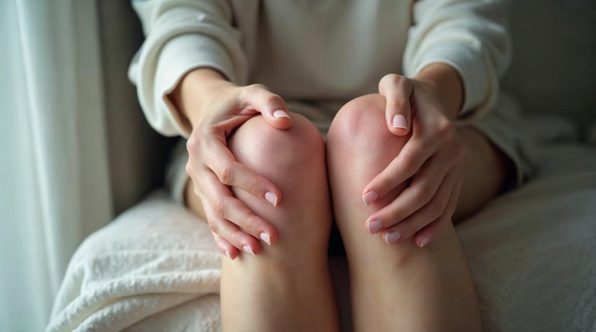
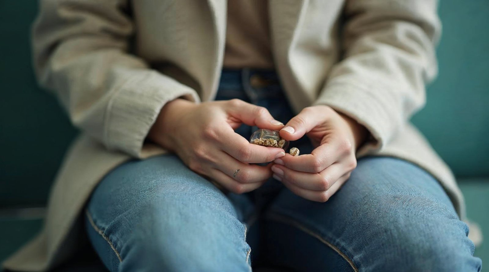

이종호 한의사 감수좋은꿈참사랑한의원 대표원장 (한의사 면허번호 19769)발행 2026-11-24 · 수정 2026-11-25
이 글의 차례
아침 8시, 노량진역. 1호선에서 내려 9호선으로 갈아타는 길에 사람들이 한꺼번에 계단으로 몰립니다. 늦을까 봐 계단을 두 칸씩 서둘러 내려가다 무릎 앞쪽이 찌릿합니다. 그날은 그냥 넘어갑니다. 그런데 며칠 뒤부터는 계단을 내려갈 때마다 무릎이 시큰하고, 저녁 퇴근길에는 저도 모르게 난간을 찾게 됩니다. 오래 앉아 있다가 일어설 때도 무릎이 뻣뻣합니다.
노량진역은 1호선과 9호선이 지나 갈아타는 분이 많습니다. 바쁜 출퇴근 시간에 계단을 서둘러 오르내리다 무릎이 시큰하다는 분을 진료실에서 자주 만납니다. 이런 말씀도 자주 듣습니다. 아직 젊은데 벌써 무릎이 이러면 어떡하냐고요. 매일 지나야 하는 길이라 피할 수도 없으니 걱정이 더 크시지요.
하루를 시작하고 마치는 길이 불편하다는 것, 생각보다 마음을 많이 지치게 합니다.
저는 먼저 계단을 내려가는 방법부터 바꿔 보자고 말씀드립니다. 난간을 잡고 한 칸씩 천천히 내려가는 것만으로도 무릎 부담이 줄어드는 경우가 많습니다. 에스컬레이터를 섞어 쓰는 것도 방법입니다. 다만 무릎이 갑자기 붓거나, 걸려서 주저앉는 느낌이 있다면 먼저 확인이 필요합니다.
왜 계단을 내려갈 때 무릎이 더 힘들까요
계단을 오를 때보다 내려갈 때 더 아프다는 분이 많습니다. 내려갈 때는 무릎이 몸무게를 받아 내며 브레이크 역할을 해, 오를 때보다 무릎 앞쪽 부담이 크다고 알려져 있습니다. 서둘러 뛰어 내려가거나 두 칸씩 디디면 그 충격이 한꺼번에 몰립니다.
허벅지 앞쪽 근육은 무릎을 받쳐 주는 버팀목 같은 역할을 합니다. 오래 앉아 지내 이 근육이 약해지면 무릎을 받쳐 주는 힘이 부족해 시큰함을 더 느끼기도 합니다. 하루 종일 학원과 독서실, 사무실 의자에 앉아 있다가 저녁에 갑자기 계단을 오르내리는 생활이라면 더 그렇습니다.
출퇴근 시간의 계단은 조건이 더 나쁩니다. 사람에 밀려 계단 가장자리를 디디거나 발끝만 걸치면 무릎이 비틀리는 힘을 받기 쉽습니다. 무거운 가방을 한쪽으로 메면 몸이 기울어 한쪽 무릎에 부담이 더 실리기도 하고요. 추운 아침 몸이 굳은 채로 서두르면 무릎 주변이 더 뻣뻣하게 느껴진다는 분도 있습니다.
발목이나 골반의 정렬, 신발의 쿠션도 무릎에 전해지는 부담에 영향을 줄 수 있습니다. 바닥이 딱딱하고 얇은 구두나 뒤축이 한쪽으로 닳은 운동화를 오래 신는 분이 의외로 많습니다.
아픈 자리도 단서가 됩니다. 무릎뼈 앞이나 그 주변이 시큰하다면 계단 내려가기와 오래 앉았다 일어서기, 쪼그려 앉기에서 불편한 경우가 많아, 허벅지 앞 근육의 힘과 무릎뼈가 움직이는 길을 함께 봅니다. 무릎 안쪽이 아프다면 계단에서 무릎이 안쪽으로 모이지 않는지, 발 아치와 걸음걸이는 어떤지 살핍니다.
바깥쪽이 당기면 엉덩이 옆과 허벅지 바깥쪽의 긴장을, 오금이 붓거나 불룩하면 무릎 뒤쪽을 확인합니다. 걸리거나 힘이 빠지는 느낌이 있다면 자리를 나누기보다 연골이나 인대 확인이 먼저 필요할 수 있습니다.
무릎 앞이 시큰한 분 중에는 앉아 있을 때 무릎을 깊게 굽혀 다리를 의자 밑으로 넣어 두는 습관이 있는 분이 많습니다. 이 자세로 오래 있으면 일어설 때 무릎 앞이 더 뻣뻣하게 느껴지기 쉽습니다. 공부하거나 일할 때 가끔 다리를 앞으로 쭉 펴 주세요.
이런 분들을 자주 뵙습니다
1호선에서 9호선으로 갈아타며 매일 아침 계단을 서둘러 내려가는 직장인이 많습니다. 이런 분께는 내려가는 구간만이라도 에스컬레이터를 타고, 오르는 계단은 천천히 걸어 보자고 말씀드립니다. 2주쯤 아픈 날을 적어 보면 어느 구간이 무릎에 부담이 되는지 보입니다. 출근 시간을 10분쯤 당기거나 늦춰 덜 붐비는 때에 움직여 보는 것도 방법입니다.
서두를 일이 줄면 계단을 디디는 발걸음도 달라지니까요.
노량진 학원과 독서실을 오가며 하루 종일 앉아 있다가 저녁에 역 계단을 오르내리는 수험생도 자주 뵙습니다. 오래 앉아 있어 허벅지 앞 힘이 약해진 상태일 수 있어, 쉬는 시간마다 일어나 걷고 저녁에는 의자에 앉아 무릎 펴고 버티기를 해 보자고 합니다.
무거운 책가방을 한쪽 어깨로 메고 계단을 오르내리는 분들도 있습니다. 한쪽 무릎만 시큰해지기도 해서, 가방을 양쪽으로 메고 짐을 줄여 차이를 살펴봅니다.
무릎이 아파서 계단도 걷기도 아예 끊었다는 분들도 계십니다. 쉬는 동안은 편한데, 다시 걸으려니 더 불안하다고 하시지요. 이런 분께는 평지 걷기 10~15분부터 다시 시작해, 다음 날 무릎 상태를 보며 조금씩 늘려 보자고 말씀드립니다.
언제 아픈지도 사람마다 다릅니다. 아침 첫 계단에서 뻣뻣하다가 걷다 보면 풀리는 분이 있고, 아침에는 괜찮다가 하루를 보내며 점점 시큰해져 퇴근길 계단에서 가장 힘든 분이 있습니다. 둘은 비슷해 보여도 살펴볼 방향이 조금 다릅니다. 그래서 아픈 시간대를 적어 오시라고 부탁드립니다.
출퇴근길에서 바로 해 볼 수 있는 것
내려갈 때는 난간을 잡고 한 칸씩 천천히 내려갑니다. 한쪽 무릎만 아프다면 오를 때는 덜 아픈 다리를 먼저 올리고, 내려갈 때는 아픈 다리를 먼저 아래 칸에 딛습니다. 디딜 때는 발 전체를 계단에 올리고, 무릎이 발끝보다 안쪽으로 모이지 않게 신경 써 보세요. 오를 때는 엉덩이 힘으로 몸을 밀어 올린다는 느낌으로 오르면 무릎 앞에만 힘이 몰리지 않습니다.
비나 눈이 와서 계단이 젖은 날에는 미끄러지며 무릎이 비틀리기 쉬우니 한층 더 천천히 디디세요.
무릎이 시큰한 동안에는 에스컬레이터나 엘리베이터를 섞어 이용합니다. 에스컬레이터에서는 걷거나 뛰지 말고 손잡이를 잡고 서서 가세요. 계단을 다 내려온 뒤 긴 환승 통로를 걸을 때는 보폭을 조금 줄이면 무릎이 덜 흔들립니다. 퇴근 뒤 유난히 시큰한 날은 다음 날 계단을 조금 줄이고, 그다음 날 무릎 상태를 보고 다시 늘립니다.
신발은 쿠션이 있는 편한 것으로 신고, 가방은 양쪽 어깨로 메고 꼭 필요한 책만 넣습니다. 역 계단을 일부러 운동 삼아 오르내리던 분이라면, 무릎이 시큰한 동안에는 그 운동을 평지 걷기로 잠시 바꿔 두세요.
집에서도 할 수 있는 것이 있습니다. 출근 전에는 의자에 앉아 무릎을 천천히 폈다 굽히기를 몇 번 해 무릎을 깨웁니다. 저녁에는 의자에 앉아 무릎을 쭉 펴고 5초 버티기를 10번쯤 해 허벅지 앞쪽 힘을 길러 봅니다. 허벅지 뒤쪽이 뻣뻣한 분은 의자에 앉아 한쪽 다리를 앞으로 뻗고 상체를 살짝 숙여, 허벅지 뒤가 당기는 느낌을 20~30초 유지해 보세요.
하는 동안이나 다음 날 무릎이 더 아프다면 횟수를 줄이세요.
혹시 이런 모습이 있으신가요? 계단을 내려갈 때 오를 때보다 무릎 앞이 더 시큰하다. 오래 앉아 있다 일어설 때 무릎이 뻣뻣하다. 쪼그려 앉거나 무릎을 꿇기가 불편하다. 바쁠 때 계단을 뛰거나 두 칸씩 내려간다. 한쪽 어깨로 무거운 가방을 멘다. 이런 것들은 계단 이용법과 생활 습관부터 바꿔 볼 신호입니다.
그런데 무릎이 붓거나 걸리는 느낌, 힘이 빠지는 느낌까지 있다면 먼저 확인을 받아 보세요.

무릎 소리, 그리고 다음 날 아침이라는 기준
계단을 오르내릴 때 무릎에서 뚝뚝, 사각사각 소리가 나서 걱정하는 분이 많습니다. 소리만 나고 아프거나 붓지 않는다면 크게 걱정하지 않아도 되는 경우가 많습니다. 다만 소리와 함께 통증이 있거나, 무릎이 붓거나, 걸려서 잘 펴지지 않는 느낌이 함께 있다면 그때는 살펴보는 것이 좋습니다.
얼마나 움직여도 되는지 헷갈릴 때는 다음 날 아침을 기준으로 삼아 보세요. 계단을 오르내리는 동안 시큰함이 견딜 만한 정도이고, 다음 날 아침이면 평소 상태로 돌아와 있다면 지금의 양을 이어 가도 되는 경우가 많습니다. 반대로 다음 날 아침 무릎이 더 뻣뻣하고 아프다면 전날 양이 많았다는 신호로 보고 계단을 조금 줄입니다.
아픈 정도를 0에서 10까지 숫자로 적어 두면 날마다 비교하기 쉽습니다. 아픈 무릎을 감싸느라 걸음이 한쪽으로 기울면 반대쪽 무릎이나 허리가 불편해지기도 하니, 걸음이 달라졌다고 느껴지면 그것도 함께 적어 두세요.
몸무게와 무릎도 이어져 있습니다. 계단을 오르내릴 때 무릎은 몸무게를 받아 내니, 수험 생활이나 야근으로 체중이 늘었다면 무릎이 받는 부담도 그만큼 커집니다. 급하게 줄이려 하기보다 끼니를 일정하게 챙기고 늦은 야식을 줄이는 것부터 시작해 보세요. 겨울 출근길에는 찬 바람에 무릎이 그대로 드러나지 않도록 긴 겉옷으로 덮어 주는 것도 작은 도움이 됩니다.

얼마나 지켜보고, 언제 진료를 받을까요
계단 이용법을 바꾸고 2~3주는 아픈 날과 아픈 구간을 적으며 지켜보세요. 3~4주가 지나도 같은 자리가 계속 시큰하거나 평지를 걸을 때까지 불편이 번진다면 상담을 받아 보시길 권합니다. 무릎이 붓는 날이 되풀이되거나 밤에 쉬고 있어도 쑤신다면 더 기다리지 않으셔도 됩니다.
다음과 같은 경우에는 기다리지 말고 먼저 해당 진료를 받으세요.
- 무릎이 갑자기 붓고 뜨거워진 경우
- 무릎이 붉고 뜨거우면서 몸에 열이 나는 경우
- 무릎이 걸리거나 힘이 빠져 주저앉는 경우
- 넘어진 뒤 체중을 싣기 어려운 경우
- 한쪽 종아리까지 붓고 아픈 경우
통증이 갑자기 심해지거나 저림·힘 빠짐이 함께 오면 영상 검사가 가능한 의료기관에서 먼저 확인하세요. 복용 중인 진통제나 다른 약은 처방한 의사와 상의 없이 줄이거나 끊지 않습니다. 다친 뒤 갑자기 크게 붓거나 열이 나고, 움직이기 어려울 만큼 아프다면 바로 가까운 응급실을 찾으세요.
좋은꿈참사랑한의원에 처음 오시면
처음 오시면 저는 출퇴근길부터 여쭙니다. 어느 역에서 몇 번 갈아타는지, 하루에 계단을 몇 번쯤 오르내리는지, 언제부터 어느 자리가 아픈지. 오를 때와 내려갈 때 중 언제 더 아픈지, 붓기나 소리, 걸리는 느낌이 있는지, 최근 운동량이나 체중이 달라졌는지도 듣습니다.
그다음 양손을 내어 달라고 하고 맥을 짚습니다. 무릎 때문에 왔는데 왜 손목을 짚느냐고 의아해하시는 분도 계십니다. 잠과 소화, 몸이 찬지 더운지 같은 몸 전체의 리듬이 통증을 느끼는 방식과 이어져 있어서입니다. 이어서 앉았다 일어서기, 계단 한두 칸 오르내리기, 쪼그려 앉기 같은 동작을 해 보시게 합니다.
계단을 디디는 모습을 보면 어느 쪽 다리에 먼저 체중을 싣는지, 무릎이 안쪽으로 모이는지가 보입니다. 그리고 무릎 주변을 눌러 보며 아픈 곳과 함께 주변 관절과 자세까지 넓게 살핍니다. 필요하다고 판단될 때는 초음파로 힘줄과 주변 조직을 확인하고, 영상 검사가 필요해 보이면 가능한 의료기관을 먼저 안내합니다.
그렇게 살핀 것을 바탕으로 침·약침·추나·온열 가운데 지금 상태에 맞는 방법을 정하고 그 이유를 설명드립니다. 진료실을 나서기 전에는 출퇴근길 계단 이용법과 집에서 할 동작, 다음에 다시 확인할 동작을 알려 드립니다. 다시 오시면 그사이 출퇴근길이 어땠는지 지난 이야기를 이어서 여쭙습니다.
오실 때 하루 계단을 오르내리는 횟수와 주로 이용하는 환승 경로, 오를 때와 내려갈 때 중 언제 더 아픈지와 아픈 위치(무릎 앞, 안쪽, 바깥쪽), 붓기·소리·걸리는 느낌이 있는지, 최근 운동량이나 체중의 변화를 적어 오시면 이야기가 빨라집니다. 평소 자주 신는 신발을 신고 오셔도 좋습니다.
마치며
매일 지나야 하는 계단에서 무릎이 시큰하면 하루의 시작과 끝이 조금씩 무거워집니다. 아직 젊은데, 하는 걱정도 들고요. 그래도 무릎이 보내는 신호를 일찍 알아차리고 이렇게 찾아 읽고 계신 것만으로도 잘하고 계신 겁니다.
내일 아침에는 계단 앞에서 한 번만 속도를 늦춰 보세요. 난간을 잡고, 한 칸씩. 그리고 어느 구간에서 무릎이 시큰했는지 기억해 두세요. 다음에 저를 만나시면 그 구간부터 함께 짚어 보겠습니다.
함께 읽으면 좋은 글
- 계단을 내려갈 때 무릎이 아프면 한의원에서는 무엇을 먼저 묻나요?
- 출퇴근 지하철에서 오래 서 있으면 허리가 뻐근할 때는 어떻게 살피나요?
- 노량진역에서 좋은꿈참사랑한의원까지는 어떻게 가나요?

왜 계단을 내려갈 때 무릎이 더 힘들까요
- 계단을 오를 때보다 내려갈 때 더 아프다는 분이 많습니다.
- 내려갈 때는 무릎이 몸무게를 받아 내며 브레이크 역할을 해, 오를 때보다 무릎 앞쪽…
이런 분들을 자주 뵙습니다
- 1호선에서 9호선으로 갈아타며 매일 아침 계단을 서둘러 내려가는 직장인이 많습니다.
- 이런 분께는 내려가는 구간만이라도 에스컬레이터를 타고, 오르는 계단은 천천히 걸어…
출퇴근길에서 바로 해 볼 수 있는 것
- 내려갈 때는 난간을 잡고 한 칸씩 천천히 내려갑니다.
- 한쪽 무릎만 아프다면 오를 때는 덜 아픈 다리를 먼저 올리고, 내려갈 때는 아픈 다…
무릎 소리, 그리고 다음 날 아침이라는 기준
- 계단을 오르내릴 때 무릎에서 뚝뚝, 사각사각 소리가 나서 걱정하는 분이 많습니다.
- 소리만 나고 아프거나 붓지 않는다면 크게 걱정하지 않아도 되는 경우가 많습니다.
자주 묻는 질문
계단을 피하는 게 좋을까요?
무릎이 불편한 동안에는 에스컬레이터를 섞어 쓰고, 편해지면 천천히 계단을 다시 늘려 가는 것을 권합니다.
노량진역에서 한의원까지는 어떻게 가나요?
노량진역(1·9호선) 3번 출구 쪽에서 마을버스 동작01번을 타고 신동아리버파크 정류장에서 내리면 건너편 건물 3층입니다.
무릎 보호대를 하고 출퇴근해도 될까요?
계단이 많은 날 잠깐 쓰면 편하다는 분이 있지만 오래 꽉 조이면 불편할 수 있습니다. 어떤 보호대를 언제 쓸지는 무릎 상태를 보고 함께 정합니다.
무릎이 시큰할 때 찜질은 따뜻하게 하나요, 차갑게 하나요?
붓고 열감이 있을 때는 차갑게, 붓기 없이 뻣뻣하고 시큰할 때는 따뜻하게 하는 경우가 많습니다. 어느 쪽이든 피부가 화끈거리거나 감각이 둔해지면 바로 멈추세요.
진료 시간은 어떻게 되나요?
좋은꿈참사랑한의원은 평일 09:30~20:00(점심 13:00~14:00), 토·일·공휴일 09:30~15:00에 진료합니다.
좋은꿈참사랑한의원은 재진 때 지난번 이야기부터 이어서 여쭙니다. 진료시간과 예약은 오시는 길에서 확인하세요.
어디서 상담받을 수 있나요?
좋은꿈참사랑한의원은 서울 동작구 만양로2길 2 신성빌딩 3층·5층(서울 동작구 상도동, 7호선 상도역 3번 출구 근처)에 있습니다. 한의사 3명(이종호 대표원장, 조영기 수석진료원장, 정원영 진료원장)이 진료합니다. 진료시간은 평일 09:30~20:00(점심 13:00~14:00), 토·일·공휴일 09:30~15:00이며, 방문 전 전화로 확인을 권합니다. 예약은 네이버 예약, 카카오톡 상담, 전화 02-815-7510로 받습니다.
이 글은 일반적인 건강 정보이며 개인의 진단이나 치료를 대신하지 않습니다. 증상이 있거나 복용 중인 약이 있다면 진료를 통해 확인하세요. 치료 효과는 개인마다 다를 수 있습니다.
작성 기준: 일반적으로 알려져 있는 건강 정보를 참고해 정리했습니다(대표원장 감수). 증상 기록은 1~2주 동안 하루 1회, 비슷한 시간에 적어 오시면 지난 상태와 비교하기 쉽습니다.